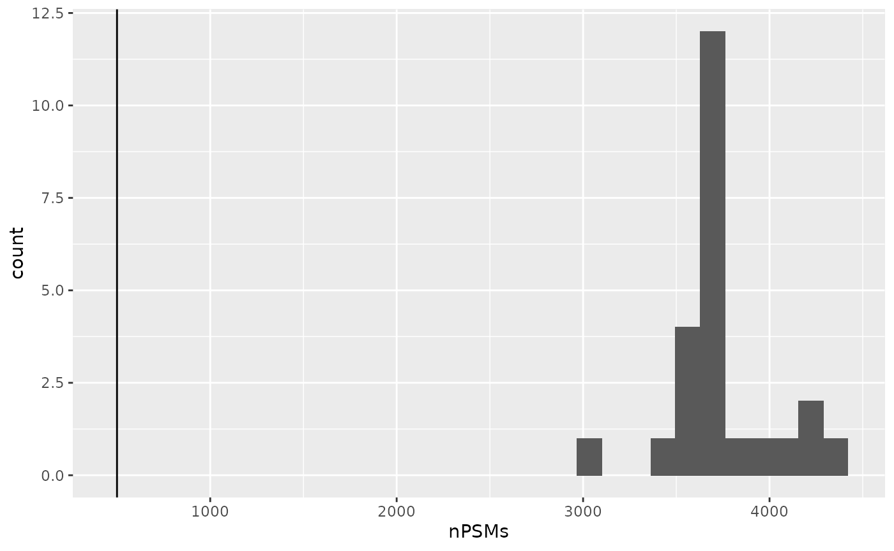
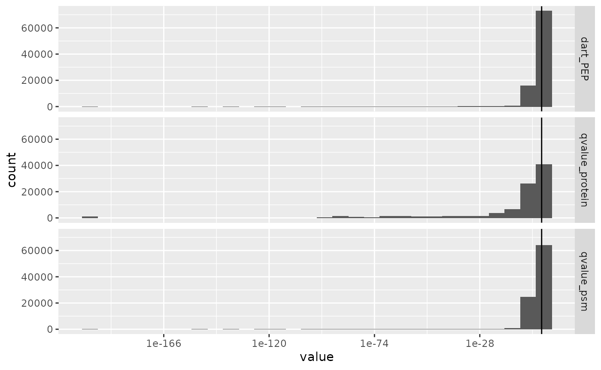
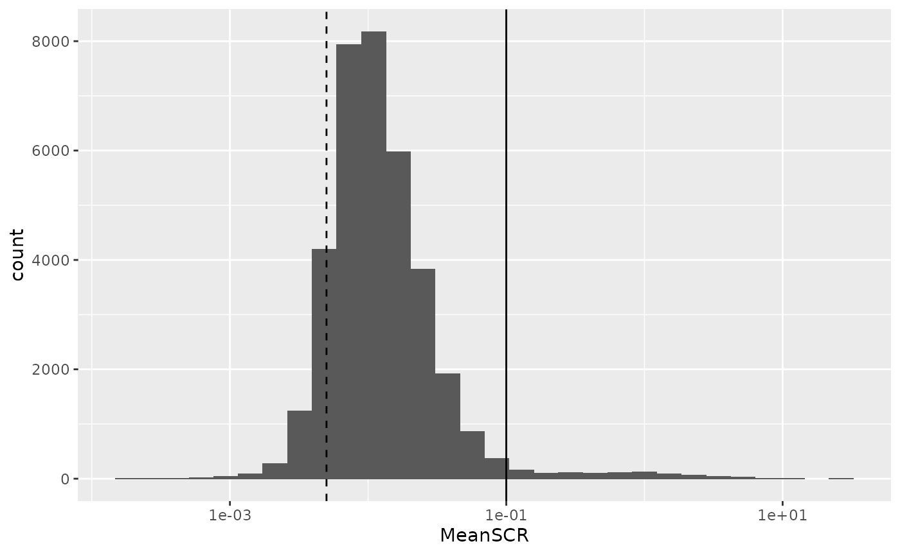
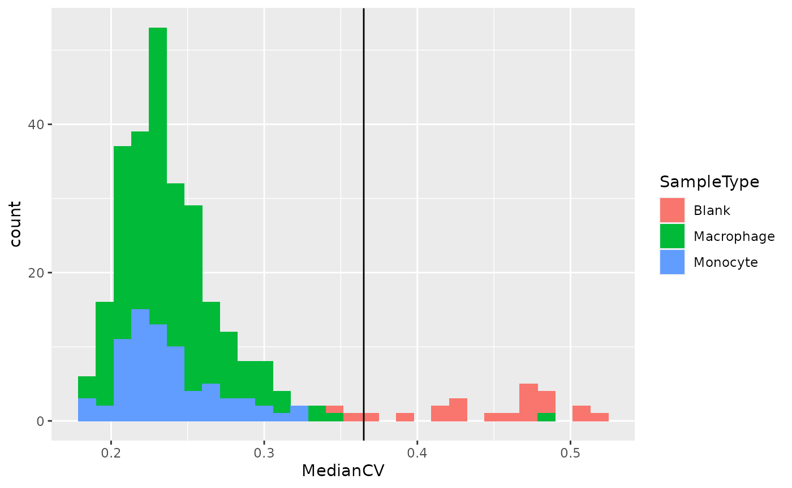
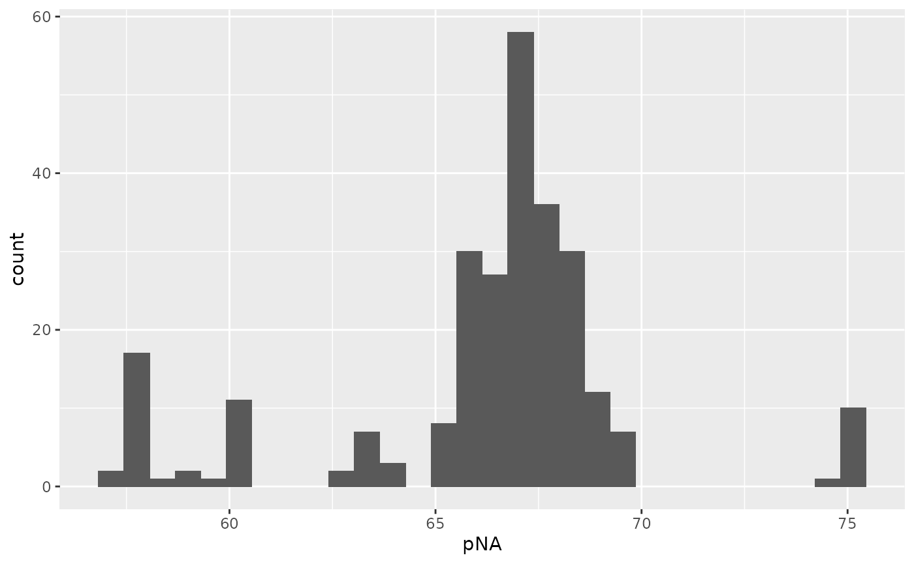
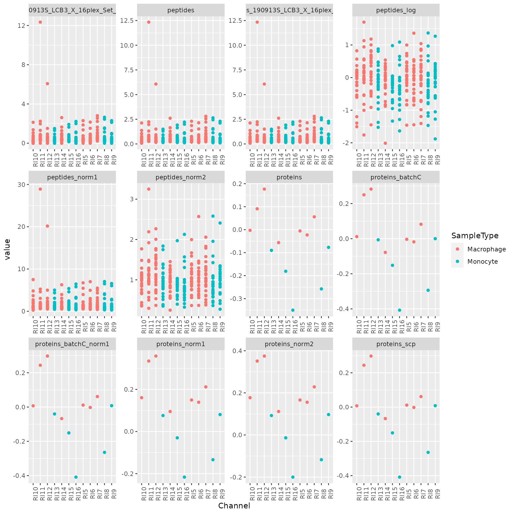

scp for single-cell proteomics analyses
Laurent Gatto and Christophe Vanderaa
Source:vignettes/v02-scp.Rmd
v02-scp.RmdLast modified: 2021-08-02 08:50:30
Compiled: Mon Aug 2 11:10:43 2021
Introduction
Mass spectrometry (MS)-based single-cell proteomics (SCP) is emerging thanks to several recent technological advances in sample preparation, liquid chromatography (LC) and MS (see Kelly (2020) for a comprehensive review). The improvements tackle the issues encountered when dealing with small sample amounts and focus on:
- Reducing sample loss
- Increasing sensitivity and quantification accuracy
- Increasing acquisition throughput
Two main strategies have currently been developed. On the one hand, label-free protocols acquire one single cell per MS run leading to accurate quantification but low sensitivity and throughput. On the other hand, label-based protocols multiplex several single-cell samples in one MS run leading to higher throughput (1000 cells per week). Another advantage of label-based protocols is the inclusion of a carrier sample, that is a sample containing between tens to hundreds of cells. Including a carrier increases sensitivity thanks to increased sample material, but at the cost of decreased quantification accuracy due to chemical noise (linked to sample labelling) and competition between the single-cell samples and the carrier sample during MS acquisition.
Although the scp package can handle the data acquired from the two strategies, the exercise of this vignette will focus on the multiplexed strategy developed by Specht et al. (2021), called SCoPE2. An overview of the acquisition and data processing pipeline is depicted below.
Main steps of the SCoPE2 data acquisition and processing pipeline.
The scp data framework
SCP data is very similar to bulk proteomics data with the exception that the PSM data may be composed of tens to hundreds of separate acquisition runs. The QFeatures class is able to store this acquisition structure by considering each MS run as a separate assay. Because the assays hold information about single cells, they are stored as SingleCellExperiment objects (Lun and Risso (2020)) to create a direct interface to existing Bioconductor packages. Performing downstream analyses (such as dimension reduction, clustering, finding markers) very easy. The links between related features across different assays are also stored to facilitate manipulation and visualization of of PSM, peptide and protein data as we go along with the processing workflow.
Conceptual overview of a QFeatures object containing SCP data. Each assay is stored as a SingleCellExperiment object.
The scp package
The general workflow for processing SCP data is very similar to the workflow for bulk proteomics that we presented in the previous vignette. Therefore, the QFeatures package already contains most of the tools required for the processing of SCP data. The scp package implements the missing functions that are specifically designed for dealing with SCP data. Below, we provide the list of functions from scp that extend the QFeatures functions:
-
readSCP: this is the main feature of thescppackage. It loads and formats standard data tables intoQFeaturesobjects ready for data processing. -
aggregateFeaturesOverAssays: extendsaggregateFeaturesto allow streamlined aggregation over multiple assays -
computeSCR: compute the sample over carrier ratio (SCR), a useful metric for feature QC -
divideByReference: divide columns by a reference column -
medianCVperCell: compute the median coefficient of variation (CV) per cell, a useful metric for single-cell QC -
normalizeSCP: extendsQFeatures::normalizetoSingleCellExperimentobjects -
pep2qvalue: compute q-values from posterior error probabilities -
rowDataToDF: extract therowDataof aQFeaturesobject to aDataFrame
You will be able to test those functions in the exercise later in this vignette.
Load SCP data
There are two input tables required for starting an analysis with scp:
- The feature data
- The sample data
Feature data
The feature data are generated after the identification and quantification of the MS spectra by a pre-processing software such as MaxQuant, ProteomeDiscoverer or MSFragger (the list of available software is actually much longer). We will here use as an example a data table that has been generated by MaxQuant. The table is available from the scp package and is called mqScpData (for MaxQuant-generated SCP data).
In this toy example, there are 1361 rows corresponding to features (quantified PSMs) and 149 columns corresponding to different data fields recorded by MaxQuant during the processing of the MS spectra. The columns can be divided into three categories:
- Columns holding feature quantifications
- Columns holding feature metadata
- Columns holding MS run metadata
Feature quantifications
The quantification data can be composed of one (in case of label-free acquisition) up to 16 columns (in case of TMT-16 multiplexing). The columns holding the quantification start with Reporter.intensity. followed by a number.
(quantCols <- grep("Reporter.intensity.\\d", colnames(mqScpData), value = TRUE))
## [1] "Reporter.intensity.1" "Reporter.intensity.2" "Reporter.intensity.3"
## [4] "Reporter.intensity.4" "Reporter.intensity.5" "Reporter.intensity.6"
## [7] "Reporter.intensity.7" "Reporter.intensity.8" "Reporter.intensity.9"
## [10] "Reporter.intensity.10" "Reporter.intensity.11" "Reporter.intensity.12"
## [13] "Reporter.intensity.13" "Reporter.intensity.14" "Reporter.intensity.15"
## [16] "Reporter.intensity.16"As you may notice, the example data was acquired using a TMT-16 protocol since we retrieve 16 quantification columns. Actually, some runs were acquired using a TMT-11 protocol (11 labels) but we will come back to this later.
head(mqScpData[, quantCols])
## Reporter.intensity.1 Reporter.intensity.2 Reporter.intensity.3
## 1 61251 501.71 3731.3
## 2 58648 1099.80 2837.7
## 3 150350 3705.00 9361.0
## 4 27347 405.90 1525.2
## 5 84035 583.09 4092.3
## 6 44895 700.23 2283.0
## Reporter.intensity.4 Reporter.intensity.5 Reporter.intensity.6
## 1 1643.30 871.84 981.87
## 2 494.32 349.26 1030.50
## 3 0.00 1945.40 1188.60
## 4 0.00 0.00 318.74
## 5 530.13 718.13 2204.50
## 6 1109.60 0.00 675.79
## Reporter.intensity.7 Reporter.intensity.8 Reporter.intensity.9
## 1 1200.10 939.06 1457.50
## 2 0.00 1214.10 800.58
## 3 1574.00 2302.10 2176.10
## 4 0.00 519.81 0.00
## 5 960.51 453.77 1188.40
## 6 0.00 809.38 668.88
## Reporter.intensity.10 Reporter.intensity.11 Reporter.intensity.12
## 1 1329.80 981.83 NA
## 2 807.79 391.38 NA
## 3 1399.50 1307.50 2192.4
## 4 507.23 370.79 NA
## 5 740.99 0.00 NA
## 6 1467.50 901.38 NA
## Reporter.intensity.13 Reporter.intensity.14 Reporter.intensity.15
## 1 NA NA NA
## 2 NA NA NA
## 3 1791.4 1727.5 2157.3
## 4 NA NA NA
## 5 NA NA NA
## 6 NA NA NA
## Reporter.intensity.16
## 1 NA
## 2 NA
## 3 1398
## 4 NA
## 5 NA
## 6 NAFeature metadata
Most columns in the mqScpData table contain information used or generated during the identification of the MS spectra. For instance, you may find the charge of the parent ion, the score and probability of a correct match between the MS spectrum and a peptide sequence, the sequence of the best matching peptide, its length, its modifications, the retention time of the peptide on the LC, the protein(s) the peptide originates from and much more.
head(mqScpData[, c("Charge", "Score", "PEP", "Sequence", "Length",
"Retention.time", "Proteins")])
## Charge Score PEP Sequence Length Retention.time
## 1 2 41.029 5.2636e-04 ATNFLAHEK 9 65.781
## 2 2 44.349 5.8789e-04 ATNFLAHEK 9 63.787
## 3 2 51.066 4.0315e-24 SHTILLVQPTK 11 71.884
## 4 2 63.816 4.7622e-06 SHTILLVQPTK 11 68.633
## 5 2 74.464 6.8709e-09 SHTILLVQPTK 11 71.946
## 6 2 41.502 5.3705e-02 SLVIPEK 7 76.204
## Proteins
## 1 sp|P29692|EF1D_HUMAN
## 2 sp|P29692|EF1D_HUMAN
## 3 sp|P84090|ERH_HUMAN
## 4 sp|P84090|ERH_HUMAN
## 5 sp|P84090|ERH_HUMAN
## 6 sp|P62269|RS18_HUMANMS run metadata
This type of metadata is related to the MS instrument. In MaxQuant, only the file name generated by the MS instrument is stored. There is one file for each MS run, hence the file name can be used as a batch identifier.
unique(mqScpData$Raw.file)
## [1] "190321S_LCA10_X_FP97AG" "190222S_LCA9_X_FP94BM"
## [3] "190914S_LCB3_X_16plex_Set_21" "190321S_LCA10_X_FP97_blank_01"The 1361 PSM were found across 4 MS runs. While these 4 runs are contained in a single table, we will split them in separate assay when building the QFeautres object.
Sample data
Next to the quantification data and the feature data, sample metadata contains the experimental design generated by the researcher. The rows of sample metadata correspond to a sample in the experiment and the columns correspond to the available information about the sample. We will here use the second example table provided in scp:
data("sampleAnnotation")
head(sampleAnnotation)
## Raw.file Channel SampleType lcbatch sortday digest
## 1 190222S_LCA9_X_FP94BM Reporter.intensity.1 Carrier LCA9 s8 N
## 2 190222S_LCA9_X_FP94BM Reporter.intensity.2 Reference LCA9 s8 N
## 3 190222S_LCA9_X_FP94BM Reporter.intensity.3 Unused LCA9 s8 N
## 4 190222S_LCA9_X_FP94BM Reporter.intensity.4 Monocyte LCA9 s8 N
## 5 190222S_LCA9_X_FP94BM Reporter.intensity.5 Blank LCA9 s8 N
## 6 190222S_LCA9_X_FP94BM Reporter.intensity.6 Monocyte LCA9 s8 NThis table may contain any information about the samples. For example, useful information could be the type of sample that is analysed, an apriori known phenotype, the MS batch, the acquisition date, MS settings used to acquire the sample, the LC batch, the sample preparation batch, … scp requires 2 specific fields in the sample metadata:
- One column containing the MS run names (
Raw.filein this case). It must have the same name as the name of the column containing the MS run names in the quantification table. This will allowscpto correctly match and split data that were acquired separately. This is illustrated below by the linked circles. - One column that tells
scpwhich column in the feature data holds the quantification of the corresponding sample. This is illustrated below by the arrow.

Linking the sample data to the feature data.
readSCP
readSCP is the function that converts the sample and the feature data into a QFeatures object following the data structure described above, that is storing the data belonging to each MS batch in a separate SingleCellExperiment object. We therefore provide the feature data, the sample data to the function as well as the name of the column that holds the batch name in both tables and the name of the column in the sample data that points to the quantification columns in the feature data. We also add an (optional) suffix to the sample names to remind that samples were labelled using 16 different TMT. Finally, another optional argument is to remove empty samples (removeEmptyCols = TRUE). We do this because one run was acquired using TMT-16 and the three other runs were acquired using TMT-11, meaning that the quantification columns for labels 12 to 16 are empty for all except one batch.
scp <- readSCP(featureData = mqScpData,
colData = sampleAnnotation,
batchCol = "Raw.file",
channelCol = "Channel",
suffix = paste0("_TMT", 1:16),
removeEmptyCols = TRUE)
## Loading data as a 'SingleCellExperiment' object
## Splitting data based on 'Raw.file'
## Formatting sample metadata (colData)
## Formatting data as a 'QFeatures' objectAs prompted by the function, the feature data is converted to a SingleCellExperiment object then split according to the batch structure. This means that we should have as many assays than batches:
scp
## An instance of class QFeatures containing 4 assays:
## [1] 190222S_LCA9_X_FP94BM: SingleCellExperiment with 395 rows and 11 columns
## [2] 190321S_LCA10_X_FP97_blank_01: SingleCellExperiment with 109 rows and 11 columns
## [3] 190321S_LCA10_X_FP97AG: SingleCellExperiment with 487 rows and 11 columns
## [4] 190914S_LCB3_X_16plex_Set_21: SingleCellExperiment with 370 rows and 16 columnsIndeed, we can see that the object returned by readSCP is a QFeatures object containing 4 SingleCellExperiment assays that have been named after the 4 MS batches. Each assay contains either 11 or 16 columns (samples) depending on the TMT labelling strategy and a variable number of rows (quantified PSMs). Each piece of information can easily be retrieved thanks to the Qfeatures architectures. As mentioned in the previous vignette, sample data is retrieved from the colData. Note that unique sample names were automatically generated by combining the batch name and the suffix provided to readSCP:
colData(scp)
## DataFrame with 49 rows and 6 columns
## Raw.file Channel SampleType
## <character> <character> <character>
## 190222S_LCA9_X_FP94BM_TMT1 190222S_LC... Reporter.i... Carrier
## 190222S_LCA9_X_FP94BM_TMT2 190222S_LC... Reporter.i... Reference
## 190222S_LCA9_X_FP94BM_TMT3 190222S_LC... Reporter.i... Unused
## 190222S_LCA9_X_FP94BM_TMT4 190222S_LC... Reporter.i... Monocyte
## 190222S_LCA9_X_FP94BM_TMT5 190222S_LC... Reporter.i... Blank
## ... ... ... ...
## 190914S_LCB3_X_16plex_Set_21_TMT12 190914S_LC... Reporter.i... Macrophage
## 190914S_LCB3_X_16plex_Set_21_TMT13 190914S_LC... Reporter.i... Macrophage
## 190914S_LCB3_X_16plex_Set_21_TMT14 190914S_LC... Reporter.i... Macrophage
## 190914S_LCB3_X_16plex_Set_21_TMT15 190914S_LC... Reporter.i... Macrophage
## 190914S_LCB3_X_16plex_Set_21_TMT16 190914S_LC... Reporter.i... Macrophage
## lcbatch sortday digest
## <character> <character> <character>
## 190222S_LCA9_X_FP94BM_TMT1 LCA9 s8 N
## 190222S_LCA9_X_FP94BM_TMT2 LCA9 s8 N
## 190222S_LCA9_X_FP94BM_TMT3 LCA9 s8 N
## 190222S_LCA9_X_FP94BM_TMT4 LCA9 s8 N
## 190222S_LCA9_X_FP94BM_TMT5 LCA9 s8 N
## ... ... ... ...
## 190914S_LCB3_X_16plex_Set_21_TMT12 LCB3 s9 R
## 190914S_LCB3_X_16plex_Set_21_TMT13 LCB3 s9 R
## 190914S_LCB3_X_16plex_Set_21_TMT14 LCB3 s9 R
## 190914S_LCB3_X_16plex_Set_21_TMT15 LCB3 s9 R
## 190914S_LCB3_X_16plex_Set_21_TMT16 LCB3 s9 RThe feature metadata is retrieved from the rowData. Since the feature metadata is specific to each assay, we need to tell from which assay we want to get the rowData:
rowData(scp[["190222S_LCA9_X_FP94BM"]])[, 1:5]
## DataFrame with 395 rows and 5 columns
## uid Sequence Length Modifications Modified.sequence
## <character> <character> <integer> <character> <character>
## PSM2 _(Acetyl (... ATNFLAHEK 9 Acetyl (Pr... _(Acetyl (...
## PSM4 _(Acetyl (... SHTILLVQPT... 11 Acetyl (Pr... _(Acetyl (...
## PSM6 _(Acetyl (... SLVIPEK 7 Acetyl (Pr... _(Acetyl (...
## PSM9 _AAGLALK_ ... AAGLALK 7 Unmodified _AAGLALK_
## PSM12 _AALSAGK_ ... AALSAGK 7 Unmodified _AALSAGK_
## ... ... ... ... ... ...
## PSM1242 _YSQVLANGL... YSQVLANGLD... 12 Unmodified _YSQVLANGL...
## PSM1244 _YVLGPAVR_... YVLGPAVR 8 Unmodified _YVLGPAVR_
## PSM1247 _YYPTEDVPR... YYPTEDVPR 9 Unmodified _YYPTEDVPR...
## PSM1249 _YYSVNSR_ ... YYSVNSR 7 Unmodified _YYSVNSR_
## PSM1252 _YYTVFDR_ ... YYTVFDR 7 Unmodified _YYTVFDR_Finally, we can also retrieve the quantification matrix for an assay of interest:
assay(scp, "190222S_LCA9_X_FP94BM")[1:5, 1:5]
## 190222S_LCA9_X_FP94BM_TMT1 190222S_LCA9_X_FP94BM_TMT2
## PSM2 58648 1099.80
## PSM4 27347 405.90
## PSM6 44895 700.23
## PSM9 122070 1153.50
## PSM12 58605 895.25
## 190222S_LCA9_X_FP94BM_TMT3 190222S_LCA9_X_FP94BM_TMT4
## PSM2 2837.7 494.32
## PSM4 1525.2 0.00
## PSM6 2283.0 1109.60
## PSM9 7361.9 1732.30
## PSM12 2763.8 867.82
## 190222S_LCA9_X_FP94BM_TMT5
## PSM2 349.26
## PSM4 0.00
## PSM6 0.00
## PSM9 1515.60
## PSM12 1050.30
The scpdata package
Next to scp, we also developed scpdata, a data package that disseminates published SCP data sets formatted using the scp data structure. The package heavily relies on the ExperimentHub infrastructure. This package is an ideal platform for data sharing and promotes for open and reproducible science in SCP, it facilitates the access for developers to SCP data to build and benchmark new methodologies and it facilitates the access for new users to data in the context of training and demonstration (like this workshop).
After loading the package, you can have a look at the available datasets by running:
library(scpdata)
scpdata()
## DataFrame with 12 rows and 15 columns
## title dataprovider species taxonomyid genome
## <character> <character> <character> <integer> <character>
## EH3899 specht2019... SlavovLab ... Homo sapie... 9606 NA
## EH3900 specht2019... SlavovLab ... Homo sapie... 9606 NA
## EH3901 dou2019_ly... MassIVE Homo sapie... 9606 NA
## EH3902 dou2019_mo... MassIVE Mus muscul... 10090 NA
## EH3903 dou2019_bo... MassIVE Mus muscul... 10090 NA
## ... ... ... ... ... ...
## EH3906 zhu2018NC_... PRIDE Homo sapie... 9606 NA
## EH3907 zhu2018NC_... PRIDE Homo sapie... 9606 NA
## EH3908 cong2020AC PRIDE Homo sapie... 9606 NA
## EH3909 zhu2019EL PRIDE Gallus gal... 9031 NA
## EH6011 liang2020_... PRIDE Homo sapie... 9606 NA
## description coordinate_1_based maintainer rdatadateadded
## <character> <integer> <character> <character>
## EH3899 SCP expres... 1 Christophe... 2020-11-05
## EH3900 SCP expres... 1 Christophe... 2020-11-05
## EH3901 SCP expres... 1 Christophe... 2020-11-05
## EH3902 SCP expres... 1 Christophe... 2020-11-05
## EH3903 SCP expres... 1 Christophe... 2020-11-05
## ... ... ... ... ...
## EH3906 Near SCP e... 1 Christophe... 2020-11-05
## EH3907 Near SCP e... 1 Christophe... 2020-11-05
## EH3908 SCP expres... 1 Christophe... 2020-11-05
## EH3909 SCP expres... 1 Christophe... 2020-11-05
## EH6011 Expression... 1 Christophe... 2021-04-27
## preparerclass tags rdataclass
## <character> <list> <character>
## EH3899 scpdata Experiment...,Expression...,Experiment...,... QFeatures
## EH3900 scpdata Experiment...,Expression...,Experiment...,... QFeatures
## EH3901 scpdata Experiment...,Expression...,Experiment...,... QFeatures
## EH3902 scpdata Experiment...,Expression...,Experiment...,... QFeatures
## EH3903 scpdata Experiment...,Expression...,Experiment...,... QFeatures
## ... ... ... ...
## EH3906 scpdata Experiment...,Expression...,Experiment...,... QFeatures
## EH3907 scpdata Experiment...,Expression...,Experiment...,... QFeatures
## EH3908 scpdata Experiment...,Expression...,Experiment...,... QFeatures
## EH3909 scpdata Experiment...,Expression...,Experiment...,... QFeatures
## EH6011 scpdata Expression...,MassSpectr...,Proteome,... QFeatures
## rdatapath sourceurl sourcetype
## <character> <character> <character>
## EH3899 scpdata/sp... https://sc... CSV
## EH3900 scpdata/sp... https://sc... CSV
## EH3901 scpdata/do... ftp://mass... XLS/XLSX
## EH3902 scpdata/do... ftp://mass... XLS/XLSX
## EH3903 scpdata/do... ftp://mass... XLS/XLSX
## ... ... ... ...
## EH3906 scpdata/zh... ftp://ftp.... TXT
## EH3907 scpdata/zh... ftp://ftp.... TXT
## EH3908 scpdata/co... ftp://ftp.... TXT
## EH3909 scpdata/zh... ftp://ftp.... TXT
## EH6011 scpdata/li... ftp://ftp.... TXTFor instance, loading the data sets published in Zhu et al. (2019) is as simple as calling the title of the data set:
zhu2019EL()
## An instance of class QFeatures containing 62 assays:
## [1] 1H1a: SingleCellExperiment with 152 rows and 1 columns
## [2] 1H1b: SingleCellExperiment with 267 rows and 1 columns
## [3] 1H1c: SingleCellExperiment with 128 rows and 1 columns
## ...
## [60] 2N0c: SingleCellExperiment with 61 rows and 1 columns
## [61] peptides: SingleCellExperiment with 3444 rows and 60 columns
## [62] proteins: SingleCellExperiment with 840 rows and 60 columnsReproduce a published analysis
As a use-case, we will reproduce the analysis of the SCoPE2 data published in Specht et al. (2021). SCoPE2 is the first published SCP protocol that has been used to profile thousands of proteins in thousands of single-cells. This is a technical milestone for the field and it opens the door for a fine-grain understanding of biological processes at the protein level.
Along their acquisition protocol, the authors have also provided an R script to reproduce their data processing. The code is hard to read and built from scratch. We have used scp to standardize this workflow (Vanderaa and Gatto (2021)) and reproduce the results using code that can easily be adapted to other data sets. The outline of the workflow is shown below.

Workflow describing the main steps performed by Specht et al. to process the SCP data. Figure taken from Vanderaa and Gatto (2021)
The replication analysis on the full data set is provided in another vignette.
Import the data
In a previous section we have shown how to format the feature and sample tables to a Qfeatures object for a small subset of the SCoPE2 data set. We will here import the data directly from scpdata to gain some time.
(scp <- specht2019v3())
## An instance of class QFeatures containing 179 assays:
## [1] 190222S_LCA9_X_FP94AA: SingleCellExperiment with 2777 rows and 11 columns
## [2] 190222S_LCA9_X_FP94AB: SingleCellExperiment with 4348 rows and 11 columns
## [3] 190222S_LCA9_X_FP94AC: SingleCellExperiment with 4917 rows and 11 columns
## ...
## [177] 191110S_LCB7_X_APNOV16plex2_Set_9: SingleCellExperiment with 4934 rows and 16 columns
## [178] peptides: SingleCellExperiment with 9354 rows and 1490 columns
## [179] proteins: SingleCellExperiment with 3042 rows and 1490 columnsThe data set provides 177 assays containing the PSM data, but also two assays that contain the peptide and protein data generated by the authors in the original work.
First, to reduce the computational burden we will focus on part of the data. The samples that were acquired in 4 chromatographic batches and we will run this example on the batch called (LCB3).
Before starting the exercise
The remainder of the vignette includes a few exercises for you to have your hands on the functions in QFeatures and scp. We have hidden the solution under Solution ticks that you can click on to reveal a good answer (sometimes, several solution are possible but we provided only one).
Important: while experimenting with the package, you might cause unwanted changes to your data. To avoid running the whole script at every mistake, we recommend you to save the data in a temporary variable before every exercise. For example:
tmp <- scpAs soon as you realize you made undesired changes, you can quickly revert to the previous state of the data by running
scp <- tmpPSM quality control
This section will guide you through the filtering of low-quality features based on different metrics.
Filter out failed runs based on PSM content
First, only the assays that have sufficient PSMs are kept. The authors keep an assay if it has over 500 PSMs. Before filtering, let’s first look at the distribution of the number of PSMs per assay.
Exercise: Extract the number of rows (here PSMs) and the number of columns (TMT channels) of each assay using the dims function implemented in QFeatures.
Solution
nPSMs <- dims(scp)[1, ]Let’s have a look at the number of features that were identified in the different runs. The data visualization in this vignette is performed using the ggplot2 function.
library("ggplot2")
ggplot(data.frame(nPSMs)) +
aes(x = nPSMs) +
geom_histogram() +
geom_vline(xintercept = 500)
No MS run failed in the LB3 batch. If some runs had failed, we could have subsetted the data taking advantage of the subsetting method of a QFeatures object.
scp <- scp[, , nPSMs > 500]Filter out PSMs with high false discovery rate
Next, the SCoPE2 workflow filters PSMs based on the false discovery rate (FDR) for identification. This will remove the PSMs that were matched by chance. The PSM data were already processed with DART-ID (Chen, Franks, and Slavov (2019)), a python software that updates the confidence in peptide identification using an Bayesian inference approach. DART-ID outputs for every PSM the updated posterior error probability (PEP). Filtering on the PEP is too conservative and it is rather advised to filter based on FDR (Käll et al. (2008)). To control for the FDR, we need to compute q-values, that correspond to the minimal FDR threshold that would still select the associated feature.
You can use the pep2qvalue function to easily compute q-values from the PEPs computed by MaxQuant or updated by DART-ID. In the SCoPE2 workflow, the features are selected based on the FDR at PSM level and at protein level. We here show to convert the PEP to q-values at PSM level. The DART-ID PEPs (dart_PEP) are automatically retrieved from the rowData of each assay. The function will store the computed q-values back in the rowData under qvalue_psm.
scp <- pep2qvalue(scp,
i = names(scp),
PEP = "dart_PEP",
rowDataName = "qvalue_psm")Exercise: Try it yourself and convert the PEPs to protein-level q-values. Note that you will need to group the features by the protein identifiers in order to compute the q-values at proteins level.
Hint2
UserowDataNames on the QFeatures object to list all available grouping variables.
Hint2
If you run into errors, make sure to change the name of therowData variable to something like qvalue_protein.
Solution
scp <- pep2qvalue(scp,
i = names(scp),
groupBy = "protein",
PEP = "dart_PEP",
rowDataName = "qvalue_protein")You can extract the q-values from the rowData of several assays using the rbindRowData function. It takes the rowData of interest and returns a single DataFrame table with all common variables. Let’s plot the q-values along with the DART-ID PEPs using ggplot2 facets.
rbindRowData(scp, i = names(scp)) %>%
data.frame %>%
pivot_longer(cols = c("dart_PEP", "qvalue_psm", "qvalue_protein"),
names_to = "measure") %>%
ggplot(aes(x = value)) +
geom_histogram() +
geom_vline(xintercept = 0.1) +
scale_x_log10() +
facet_grid(rows = vars(measure))
Filtering out low-confidence PSMs is performed using the filterFeatures function. The SCoPE2 authors removed features so to control a 1% PSM and protein FDR.
Exercise: Keep only PSMs that have a PSM q-values and protein q-values lower than 0.01.
Solution
scp <- filterFeatures(scp,
~ qvalue_psm < 0.01 & qvalue_protein < 0.01)Filter out contaminants
All MS-based proteomic experiment is subjected to contamination from the environment. The most common contamination is keratin released from the researcher’s skin. A small database of known contaminants is commonly supplied to tag PSMs originating from potential contaminants. Next to that, a decoy database consisting of reversed peptide sequence is used to assess the reliability of the PSM identification and tag false hits.
Exercise: remove the PSMs that were matched to contaminant proteins (the protein name starts with CON) or to the decoy database (the protein name starts with REV). Again, filterFeatures can directly access the protein names from the rowData.
Hint1
Remember therowData column holding the protein names is called protein. You can have a quick look at all protein names using rbindRowData(scp)$protein.
Hint2
You can use thegrepl function to match protein identifiers with the pattern of interest (REV|CON in this case).
Solution
scp <- filterFeatures(scp,
~ !grepl("REV|CON", protein))Filter out noisy spectra
A PIF (parental ion fraction) smaller than 80 % indicates the associated spectra is contaminated by co-isolated peptides and therefore the quantification becomes unreliable. The PIF was computed by MaxQuant and is readily available for filtering.
Exercise: Keep only PSMs that have low spectral contamination, that is, PSMs with an associated PIF greater than 0.8.
Solution
scp <- filterFeatures(scp,
~ !is.na(PIF) & PIF > 0.8)Filter out PSMs with high sample to carrier ratio
The SCoPE2 authors suggested in their paper a new QC metric for SCP data, the sample to carrier ratio (SCR). The SCR is the TMT ion intensity of a single-cell sample divided by the TMT ion intensity of the carrier (200 cells) acquired during the same run as the sample. It is expected that the carrier intensities are much higher than the single-cell intensities. The scp package offers the computeSCR function that computes the SCR for each PSM averaged over all samples of interest in a given assay. To perform this, you need to tell the function which columns are the samples of interest and which columns are the carriers. The colData of the QFeatures object is used to define this.
table(scp$SampleType)
##
## Blank Carrier Macrophage Monocyte Reference Unused
## 22 24 192 74 24 48In this dataset, SampleType gives the type of sample that is present in each TMT channel. The SCoPE2 protocol includes 5 types of samples:
- The carrier channels (
Carrier) contain 200 cell equivalents and are meant to boost the peptide identification rate. - The normalization channels (
Reference) contain 5 cell equivalents and are used to partially correct for between-run variation. - The unused channels (
Unused) are channels that are left empty due to isotopic cross-contamination by the carrier channel. - The blank channels (
Blank) contain samples that do not contain any cell but are processed as single-cell samples. - The single-cell sample channels contain the single-cell samples of interest (
MacrophageorMonocyte).
The computeSCR function expects the user to provide a pattern (following regular expression syntax) that identifies a carrier channel in each run and the samples. The function will store the computed SCR of each feature in the rowData of the corresponding assay. When multiple matches are found for samples or carrier, you should also provide a summarizing function through sampleFUN and carrierFUN respectively.
Exercise: Compute the SCR by considering blanks, monocytes and macrophages as samples of interest. Note there are therefore multiple samples per run for each PSM. You should compute the mean of the samples. There is only a single carrier, so you don’t need to bother providing carrierFUN. The SCR is stored in the rowData, call the new variable
Hint
Remember that the sample types are available from thecolData column SampleType. The output above provides an overview of the available sample types in the data.
Solution
scp <- computeSCR(scp,
i = names(scp),
colvar = "SampleType",
carrierPattern = "Carrier",
samplePattern = "Blank|Monocyte|Macrophage",
sampleFUN = mean,
rowDataName = "MeanSCR")Before applying the filter, let’s plot the distribution of the mean SCR.
rbindRowData(scp, i = names(scp)) %>%
data.frame %>%
ggplot(aes(x = MeanSCR)) +
geom_histogram() +
geom_vline(xintercept = c(1/200, 0.1),
lty = 2:1) +
scale_x_log10()
A great majority of the PSMs have a mean SCR that is lower than 10%, as expected. Interestingly, the mode of the distribution is located close to 1%. This is expected since every sample channel contains a single-cell and the carrier contains 200 cells leading to an expected ratio of 0.5% (dashed line).
Note that some of the SCR values are missing (when quantification data are missing or when dividing zero by zero) or are infinite (when carrier is zero but not samples). The features associated to those artefacts are removed as well.
Exercise: remove the PSMs for which the mean SCR exceeds the 10% threshold. Make sure also to remove mean SCR values that are NA or infinite.
Hint
You can check whether the mean SCR is NA usingis.na(MeanSCR), and similarly is.infinite(MeanSCR) for infinite values.
Solution
scp <- filterFeatures(scp,
~ !is.na(MeanSCR) &
!is.infinite(MeanSCR) &
MeanSCR < 0.1)Normalization to reference
In order to partially correct for between-run variation, the SCoPE2 authors compute relative reporter ion intensities. This means that intensities measured for single-cells are divided by the reference channel (5-cell equivalents). You can use the divideByReference function that divides channels of interest by the reference channel. Similarly to computeSCR, you can point to the samples and the reference columns in each assay using the annotation contained in the colData.
Exercise: divide all columns by the reference channel using divideByReference.
Hint
You can use the regular expression wildcard. to select all columns.
Solution
scp <- divideByReference(scp,
i = names(scp),
colvar = "SampleType",
samplePattern = ".",
refPattern = "Reference")Notice that by taking all samples you also included the reference channel itself. Hence, from now on, the reference channels will contain only ones. This is how it was done in the SCoPE2 paper, but for later analysis, we advice to use a pattern that matches only the single-cell columns.
PSM to peptide aggregation
Now that the PSM assays are processed, you can aggregate them to peptides. This is performed using the aggregateFeaturesOverAssays function. This is a wrapper function in scp that sequentially calls the aggregateFeatures from the QFeatures package over the different assays. For each assay, the function aggregates several PSMs into a unique peptide given an aggregating variable in the rowData (peptide sequence) and a user-supplied aggregating function (the median for instance). Regarding the aggregating function, the SCoPE2 analysis removes duplicated peptide sequences per run by taking the first non-missing value. While better alternatives are documented in QFeatures::aggregateFeatures, we suggest to use this approach for the sake of replication, but also to illustrate that custom functions can be applied when aggregating.
For each assay, a new aggregated assay will be added to the dataset. The aggregated peptide assays must be given a name. We here suggest to use the original names prefixed with peptides_.
You now have all the required information to aggregate the PSMs in the different batches to peptides.
Exercise: use the aggregateFeaturesOverAssays function to aggregate PSMs to peptides. Don’t forget to provide the remove.duplicates as an aggregating function.
Hint
You should aggregate PSMs to peptides. So, you can group the PSMs by supplyingfcol = "peptide". The function will take the peptide column in the rowData that contains the peptide sequences and create a new aggregated feature for each unique sequence.
Solution
scp <- aggregateFeaturesOverAssays(scp,
i = names(scp),
fcol = "peptide",
name = peptideAssays,
fun = remove.duplicates)Under the hood, the QFeatures architecture preserves the relationship between the aggregated assays. See ?AssayLinks for more information on relationships between assays. Notice that aggregateFeaturesOverAssays created as many new assays as the number of supplied assays.
scp
## An instance of class QFeatures containing 48 assays:
## [1] 190913S_LCB3_X_16plex_Set_12: SingleCellExperiment with 1620 rows and 16 columns
## [2] 190913S_LCB3_X_16plex_Set_17_reinject2: SingleCellExperiment with 1482 rows and 16 columns
## [3] 190914S_LCB3_X_16plex_Set_1: SingleCellExperiment with 1415 rows and 16 columns
## ...
## [46] peptides_190914S_LCB3_X_16plex_Set_7: SingleCellExperiment with 1771 rows and 16 columns
## [47] peptides_190914S_LCB3_X_16plex_Set_8: SingleCellExperiment with 1348 rows and 16 columns
## [48] peptides_190914S_LCB3_X_16plex_Set_9: SingleCellExperiment with 1944 rows and 16 columnsYou can also have a graphical overview of the assay relationships thanks to the plot function. Since many assays are present, we suggested to enable the interactive viewer for you to explore the plot.
plot(scp, interactive = TRUE)Cleaning missing data
The next step is to replace zero and infinite values by NAs. The zeros can be biological zeros or technical zeros and differentiating between the two types is a difficult task, they are therefore better considered as missing data that should be modelled using dedicated methods. The infinite values appear during the normalization by the reference when the reference channel is zero. This artefact could easily be avoided if we had replaced the zeros by NAs at the beginning of the workflow, what we strongly recommend for future analyses.
The infIsNA and the zeroIsNA functions automatically detect infinite and zero values, respectively, and replace them with NAs. Those two functions are provided by the QFeatures package. See here how you can replace infinite values by NA:
sum(is.infinite(assay(scp, peptideAssays[1])))
## [1] 31
scp <- infIsNA(scp, i = peptideAssays)
sum(is.infinite(assay(scp, peptideAssays[1])))
## [1] 0Exercise: your turn, replace all zero values by NA.
Join the peptide assays in one assay
Up to now, the data belonging to each MS run are kept in separate assays. You can combine all batches into a single assay using the joinAssays function from the QFeatures package.
Exercise: use joinAssays to combine all peptide assays in a single assay. Recall that we already stored the peptide assay names in a variable, peptideAssays.
Solution
scp <- joinAssays(scp,
i = peptideAssays,
name = "peptides")Note joinAssays has created a new assay called peptides that combines the previously aggregated peptide assays.
scp
## An instance of class QFeatures containing 49 assays:
## [1] 190913S_LCB3_X_16plex_Set_12: SingleCellExperiment with 1620 rows and 16 columns
## [2] 190913S_LCB3_X_16plex_Set_17_reinject2: SingleCellExperiment with 1482 rows and 16 columns
## [3] 190914S_LCB3_X_16plex_Set_1: SingleCellExperiment with 1415 rows and 16 columns
## ...
## [47] peptides_190914S_LCB3_X_16plex_Set_8: SingleCellExperiment with 1348 rows and 16 columns
## [48] peptides_190914S_LCB3_X_16plex_Set_9: SingleCellExperiment with 1944 rows and 16 columns
## [49] peptides: SingleCellExperiment with 4360 rows and 384 columnsAt this point, you can regularly have a look at plot(scp, interactive = TRUE) to keep an overview of the assay hierarchy.
Single-cell quality control
The SCoPE2 workflow proceeds with the filtering of low quality cells. The filtering is based on the median coefficient of variation (CV) per cell. The CV is measured for each protein in each sample as the standard deviation of the corresponding peptides divided by the average expression of those peptides. Taking the median CV per cell will give a measure of the consistency of the quantification within that cell. We want to remove cells that exhibit a high median CV because inconsistent measure imply artefacts during samples preparation.
For sake of time, we immediately show how to compute the median CV per cell. This is performed using themedianCVperCell function from the scp package. The function takes the protein information from the rowData of the assays. This information will tell how to group the features (peptides) when computing the CV. Note that we supply the peptide assays before joining in a single assays (i = peptideAssays). This is because SCoPE2 performs a custom normalization (norm = "SCoPE2"). Each row in an assay is normalized by a scaling factor. This scaling factor is the row mean after dividing the columns by the median. The authors retained CVs that are computed using at least 6 peptides (nobs = 6). See the methods section in Specht et al. (2021) for more information.
scp <- medianCVperCell(scp,
i = peptideAssays,
groupBy = "protein",
nobs = 6,
na.rm = TRUE,
colDataName = "MedianCV",
norm = "SCoPE2")The computed CVs are stored in the colData. We can now filter cells that have reliable quantifications. The blank samples are not expected to have reliable quantifications and hence can be used to estimate a null distribution of the CV. This distribution helps defining a threshold that filters out single-cells that contain noisy quantification.
colData(scp) %>%
data.frame %>%
filter(SampleType %in% c("Macrophage", "Monocyte", "Blank")) %>%
ggplot(aes(x = MedianCV,
fill = SampleType)) +
geom_histogram() +
geom_vline(xintercept = 0.365)
We can see that the protein quantification for single-cells are much more consistent within single-cell channels than within blank channels. A threshold of 0.365 best separates single-cells from empty channels.
Exercise: keep the cells that pass the median CV threshold of 0.365. You should also keep macrophages and monocytes as those represent the samples of interest. You can easily achieve this by subsetting the samples based on the associated colData using the subsetByColData function from the MultiAssayExperiment package on which the QFeatures class depends on.
Solution
scp <- subsetByColData(scp,
scp$MedianCV < 0.365 &
scp$SampleType %in% c("Macrophage", "Monocyte"))Normalization
Although you already normalized by the reference channels, the authors of SCoPE2 suggested to proceed with further data normalization. First, they normalize the columns (samples) of the peptide data by the median intensities. Then, the rows (peptides) are normalized by dividing the relative intensities by the mean relative intensities.
Exercise: apply the first normalization using the normalizeSCP function.
Hint
You will need to use thediv.median method. See the MsCoreUtils::normalizeMethods documentation for more information.
Solution
## Scale column with median
scp <- normalizeSCP(scp,
i = "peptides",
method = "div.median",
name = "peptides_norm1")
scp <- filterNA(scp,
i = "peptides_norm2",
pNA = 0.99)Log-transformation
The last processing step of the peptide data before aggregating to proteins is to log-transform the data.
Exercise: perform a base 2 log-transformation of the normalized data using the logTransform from QFeatures.
Solution
scp <- logTransform(scp,
base = 2,
i = "peptides_norm2",
name = "peptides_log")Peptide to protein aggregation
Similarly to aggregating PSM data to peptide data, you can aggregate peptide data to protein data.
Exercise: aggregate peptides to proteins. Note this time, you can use the aggregateFeatures function instead of the aggregateFeaturesOverAssays function since you only need to aggregate only one assay (peptides_log). You can use the column median as a summarizing function.
Hint
The function should take a matrix-like object as input and return a vector of length equal to the number of columns. ThematrixStats::colMedians function is the function you are looking for.
Solution
scp <- aggregateFeatures(scp,
i = "peptides_log",
name = "proteins",
fcol = "protein",
fun = matrixStats::colMedians, na.rm = TRUE)Normalization
Normalization is performed similarly to peptide normalization. You can use the same functions, but since the data were log-transformed at the peptide level, you should subtract/center by the statistic (median or mean) instead of dividing.
Exercise: normalize the protein data by first median centering the columns followed by mean centering the rows.
Hint
Have a look at what we did for peptide normalization. Instead of dividing, you should subtract.Solution
## Center columns with median
scp <- normalizeSCP(scp,
i = "proteins",
method = "center.median",
name = "proteins_norm1")
## Center rows with mean
scp <- sweep(scp,
i = "proteins_norm1",
MARGIN = 1,
FUN = "-",
STATS = rowMeans(assay(scp[["proteins_norm1"]]),
na.rm = TRUE),
name = "proteins_norm2")Imputation
The protein data contains a lot of missing values. Let’s have a look at the distribution of the percent missing data per sample. You can easily achieve this by using the nNA function. Cells contain on average over 75% missing values!
nNAres <- nNA(scp, "proteins_norm2")$nNAcols
ggplot(data.frame(nNAres),
aes(x = pNA)) +
geom_histogram()
The missing data is imputed using K nearest neighbors. QFeatures provides the impute function that serves as an interface to different imputation algorithms among which the KNN algorithm from impute::impute.knn.
Exercise: impute the missing the data using the KNN imputation algorithm. You can arbitrarily set K = 3.
Solution
scp <- impute(scp,
i = "proteins_norm2",
method = "knn",
k = 3, rowmax = 1, colmax= 1,
maxp = Inf, rng.seed = 1234)Batch correction
The final step is to model the remaining batch effects and correct for it. The data were acquired as a series of MS runs. Each MS run can be subjected to technical perturbations that lead to differences in the data. This must be accounted for to avoid attributing biological effects to technical effects. The ComBat algorithm (Johnson, Li, and Rabinovic (2007)) is used in the SCoPE2 script to correct for those batch effects. ComBat is part of the sva package. It requires a batch variable, in this case the LC-MS/MS run, and adjusts for batch effects, while protecting variables of interest, the sample type in this case.
Important: we do not claim ComBat is the best method to model batch effect, we simply follow the SCoPE2 workflow. Therefore, we do not provide a wrapper function for applying batch correction on QFeatures object. However, this section is an excellent example on how to apply custom functions to the data.
Let’s first extract the assays with the associated colData.
sce <- getWithColData(scp, "proteins_norm2")
## Warning: 'experiments' dropped; see 'metadata'You can then apply the function of interest, here batch correction with ComBat. See how we easily retrieve the sample annotation required to perform the batch correction. The output of ComBat is used to overwrite the data in the assay.
batch <- sce$Set
model <- model.matrix(~ SampleType, data = colData(sce))
assay(sce) <- ComBat(dat = assay(sce),
batch = batch,
mod = model)Finally, the modified assay needs to be added to the QFeatures object. To properly achieve this, you will need two functions. First, addAssay allows you to add the new assay to the data set. Second, the addAssayLinkOneToOne will create one-to-one link between the proteins of the new assay and the proteins of a parent assay.
Exercise: add the batch corrected protein data as a new assay in the QFeatures object (you can call it proteins_batchC). Create a one-to-one relationship between the features of the last assay (proteins_norm2) and the features of the newly added assay.
Solution
scp <- addAssay(scp, y = sce,
name = "proteins_batchC")
scp <- addAssayLinkOneToOne(scp, from = "proteins_norm2",
to = "proteins_batchC")Note that in the case the new assay has not a one-to-one relationship with the parent assay, you can also add custom relationships using the addAssayLink function.
Normalization
A final normalization step is performed in the SCoPE2 workflow. This is exactly the same as three sections above.
## Center columns with median
scp <- normalizeSCP(scp,
i = "proteins_batchC",
method = "center.median",
name = "proteins_batchC_norm1")
## Center rows with mean
scp <- sweep(scp,
i = "proteins_batchC_norm1",
MARGIN = 1,
FUN = "-",
STATS = rowMeans(assay(scp[["proteins_batchC_norm1"]]),
na.rm = TRUE),
name = "proteins_scp")By running this last step, you have replicated the data processing performed by the SCoPE2 workflow! The data is now ready for data exploration and downstream analyses.
Data visualization
The QFeatures package provides the longFormat function that formats the data set as a long table, ideal for the integration with ggplot2. This can be used for instance to explore the different processing steps applied to the data. Suppose you have a protein of interest, for instance Filamin-A (P21333). You can subset the QFeatures object with that protein using the first index in the bracket function. Note that the subsetting will select that protein and all associated peptides and PSMs across all assays. Next the QFeatures is converted to a long table, containing the quantitative values, but also some variables of interest from the colData (colvars) and the rowData (rowvars). We can use the metadata to filter for a batch of interest for example.
lf <- longFormat(scp["P21333", , ],
colvars = c("Set", "Channel", "SampleType"))
lf <- filter(data.frame(lf), Set == "190913S_LCB3_X_16plex_Set_12")This filtered long data is then passed to ggplot2 for data visualization.
ggplot(lf) +
aes(x = Channel,
y = value,
col = SampleType) +
geom_point() +
facet_wrap(~ assay, scales = "free") +
theme(axis.text.x = element_text(angle = 90))
## Warning: Removed 1262 rows containing missing values (geom_point).
This graph can be used to track the processing of the quantitative data.
Since each assay is a SingleCellExperiment object, the data can also easily be plugged into dimension reduction functions from the Bioconductor package scater. We show here an example of dimension reduction results using t-SNE.
sce <- getWithColData(scp, "proteins_scp")
## Warning: 'experiments' dropped; see 'metadata'
## Warning: Ignoring redundant column names in 'colData(x)':
library(scater)
set.seed(1234)
sce <- runTSNE(sce,
ncomponents = 2,
ntop = Inf,
scale = TRUE,
exprs_values = 1,
name = "TSNE")
## Plotting is performed in a single line of code
plotTSNE(sce, colour_by = "SampleType")
This graph shows a low dimension representation of the final processed protein data. Each point represents a cell. The sample type is accessed from the colData and coloured on the graph. This allows to evaluate whether the quantitative data contains information to separate monocytes from differentiated macrophages.
Conclusion
We hope we could convince you that QFeatures and its extension scp are an ideal environment to manipulate and process MS-SCP quantification data. This is only the beginning of the journey, as further development and benchmarking are required to offer improved processing workflows. Furthermore, downstream analyses, such as differential expression analyses, require the development of new statistical methods to model the complex data structure present in SCP data (Vanderaa and Gatto (2021)). Those methods could highly benefit from the QFeatures and scp infrastructure to access and manipulate the required information. Furthermore, the scpdata package provides ready-to-process data that represent valuable use cases to build analytical method onto.
Further reading
- You can find more information about how to load your own data using
scpin this vignette. - We also dedicated a separate vignette about data visualization from a
QFeaturesobject. - If you want to push forward the development of new analytical methods and QC metrics in for single-cell proteomics, we also recommend you to read the advanced vignette.
Have a look at our paper that describes the reproduction of the complete SCoPE2 data set and highlights some important challenges that remain to be tackled in the field.
Session information
sessionInfo()
## R version 4.1.0 (2021-05-18)
## Platform: x86_64-pc-linux-gnu (64-bit)
## Running under: Ubuntu 20.04.2 LTS
##
## Matrix products: default
## BLAS/LAPACK: /usr/lib/x86_64-linux-gnu/openblas-pthread/libopenblasp-r0.3.8.so
##
## locale:
## [1] LC_CTYPE=en_US.UTF-8 LC_NUMERIC=C
## [3] LC_TIME=en_US.UTF-8 LC_COLLATE=en_US.UTF-8
## [5] LC_MONETARY=en_US.UTF-8 LC_MESSAGES=C
## [7] LC_PAPER=en_US.UTF-8 LC_NAME=C
## [9] LC_ADDRESS=C LC_TELEPHONE=C
## [11] LC_MEASUREMENT=en_US.UTF-8 LC_IDENTIFICATION=C
##
## attached base packages:
## [1] stats4 stats graphics grDevices utils datasets methods
## [8] base
##
## other attached packages:
## [1] scater_1.21.2 scuttle_1.3.0
## [3] SingleCellExperiment_1.15.1 forcats_0.5.1
## [5] stringr_1.4.0 dplyr_1.0.7
## [7] purrr_0.3.4 readr_2.0.0
## [9] tidyr_1.1.3 tibble_3.1.3
## [11] ggplot2_3.3.5 tidyverse_1.3.1
## [13] sva_3.41.0 BiocParallel_1.27.2
## [15] genefilter_1.75.0 mgcv_1.8-36
## [17] nlme_3.1-152 scpdata_1.1.0
## [19] ExperimentHub_2.1.4 AnnotationHub_3.1.4
## [21] BiocFileCache_2.1.1 dbplyr_2.1.1
## [23] scp_1.3.3 QFeatures_1.3.6
## [25] MultiAssayExperiment_1.19.5 SummarizedExperiment_1.23.1
## [27] Biobase_2.53.0 GenomicRanges_1.45.0
## [29] GenomeInfoDb_1.29.3 IRanges_2.27.0
## [31] S4Vectors_0.31.0 BiocGenerics_0.39.1
## [33] MatrixGenerics_1.5.1 matrixStats_0.60.0
## [35] BiocStyle_2.21.3
##
## loaded via a namespace (and not attached):
## [1] readxl_1.3.1 backports_1.2.1
## [3] systemfonts_1.0.2 igraph_1.2.6
## [5] lazyeval_0.2.2 splines_4.1.0
## [7] digest_0.6.27 htmltools_0.5.1.1
## [9] viridis_0.6.1 fansi_0.5.0
## [11] magrittr_2.0.1 memoise_2.0.0
## [13] ScaledMatrix_1.1.0 cluster_2.1.2
## [15] tzdb_0.1.2 limma_3.49.1
## [17] Biostrings_2.61.1 annotate_1.71.0
## [19] modelr_0.1.8 pkgdown_1.6.1
## [21] colorspace_2.0-2 blob_1.2.2
## [23] rvest_1.0.1 rappdirs_0.3.3
## [25] textshaping_0.3.5 haven_2.4.1
## [27] xfun_0.24 crayon_1.4.1
## [29] RCurl_1.98-1.3 jsonlite_1.7.2
## [31] impute_1.67.0 survival_3.2-11
## [33] glue_1.4.2 gtable_0.3.0
## [35] zlibbioc_1.39.0 XVector_0.33.0
## [37] DelayedArray_0.19.1 BiocSingular_1.9.1
## [39] scales_1.1.1 DBI_1.1.1
## [41] edgeR_3.35.0 Rcpp_1.0.7
## [43] viridisLite_0.4.0 xtable_1.8-4
## [45] clue_0.3-59 rsvd_1.0.5
## [47] bit_4.0.4 MsCoreUtils_1.5.0
## [49] httr_1.4.2 ellipsis_0.3.2
## [51] farver_2.1.0 pkgconfig_2.0.3
## [53] XML_3.99-0.6 sass_0.4.0
## [55] locfit_1.5-9.4 utf8_1.2.2
## [57] labeling_0.4.2 tidyselect_1.1.1
## [59] rlang_0.4.11 later_1.2.0
## [61] AnnotationDbi_1.55.1 munsell_0.5.0
## [63] BiocVersion_3.14.0 cellranger_1.1.0
## [65] tools_4.1.0 cachem_1.0.5
## [67] cli_3.0.1 generics_0.1.0
## [69] RSQLite_2.2.7 broom_0.7.9
## [71] evaluate_0.14 fastmap_1.1.0
## [73] yaml_2.2.1 ragg_1.1.3
## [75] knitr_1.33 bit64_4.0.5
## [77] fs_1.5.0 KEGGREST_1.33.0
## [79] AnnotationFilter_1.17.1 sparseMatrixStats_1.5.0
## [81] mime_0.11 xml2_1.3.2
## [83] compiler_4.1.0 rstudioapi_0.13
## [85] beeswarm_0.4.0 filelock_1.0.2
## [87] curl_4.3.2 png_0.1-7
## [89] interactiveDisplayBase_1.31.2 reprex_2.0.0
## [91] bslib_0.2.5.1 stringi_1.7.3
## [93] highr_0.9 desc_1.3.0
## [95] lattice_0.20-44 ProtGenerics_1.25.1
## [97] Matrix_1.3-4 vctrs_0.3.8
## [99] pillar_1.6.2 lifecycle_1.0.0
## [101] BiocManager_1.30.16 jquerylib_0.1.4
## [103] BiocNeighbors_1.11.0 cowplot_1.1.1
## [105] irlba_2.3.3 bitops_1.0-7
## [107] httpuv_1.6.1 R6_2.5.0
## [109] promises_1.2.0.1 gridExtra_2.3
## [111] vipor_0.4.5 MASS_7.3-54
## [113] assertthat_0.2.1 rprojroot_2.0.2
## [115] withr_2.4.2 GenomeInfoDbData_1.2.6
## [117] parallel_4.1.0 hms_1.1.0
## [119] beachmat_2.9.0 grid_4.1.0
## [121] DelayedMatrixStats_1.15.0 rmarkdown_2.9
## [123] Rtsne_0.15 shiny_1.6.0
## [125] lubridate_1.7.10 ggbeeswarm_0.6.0